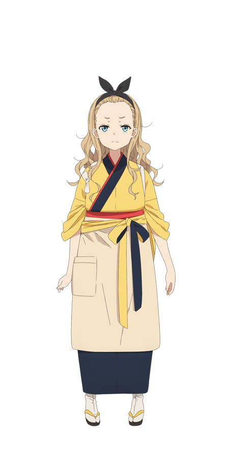

（点击可切换封面）
莉可丽丝 リコリス・リコイル
又名: 彼岸花的后坐力 / 铳动彼岸花 / Lycoris Recoil
导演: 足立慎吾 Shingo Adachi / 丸山裕介 Maruyama Yuusuke / 伊福觉志 Ifuku Kakushi / 关晓子 Seki Akiko
演员: 安济知佳 Chika Anzai / 若山诗音 Shion Wakayama / 小清水亚美 Ami Koshimizu / 久野美咲 Misaki Kuno / 榊孝辅 Sakaki Kosuke
类型: 动作 / 动画
制片国家/地区: 日本
年份: 2022
简介: 平稳的日子――其实暗藏着秘密防范犯罪的秘密组织――“DA（Direct Attack）”。作为特工的少女们“LYCORIS”。有着历代最强的LYCORIS之称的・锦木千束、优秀的LYCORIS・井之上泷奈，在咖啡厅“LycoReco”支部工作。这里接受的订单从订购咖啡和甜点，到照顾小孩、代购、面向外国人的日语老师等请放心交给“LycoReco”自由自在的乐天派、和平主义的千束与沉着冷静系、效率主义的泷奈二人跌宕起伏的混乱日常正式上演！
导演: 足立慎吾 Shingo Adachi / 丸山裕介 Maruyama Yuusuke / 伊福觉志 Ifuku Kakushi / 关晓子 Seki Akiko
演员: 安济知佳 Chika Anzai / 若山诗音 Shion Wakayama / 小清水亚美 Ami Koshimizu / 久野美咲 Misaki Kuno / 榊孝辅 Sakaki Kosuke
类型: 动作 / 动画
制片国家/地区: 日本
年份: 2022
简介: 平稳的日子――其实暗藏着秘密防范犯罪的秘密组织――“DA（Direct Attack）”。作为特工的少女们“LYCORIS”。有着历代最强的LYCORIS之称的・锦木千束、优秀的LYCORIS・井之上泷奈，在咖啡厅“LycoReco”支部工作。这里接受的订单从订购咖啡和甜点，到照顾小孩、代购、面向外国人的日语老师等请放心交给“LycoReco”自由自在的乐天派、和平主义的千束与沉着冷静系、效率主义的泷奈二人跌宕起伏的混乱日常正式上演！
OP欣赏：
在LycoReco咖啡厅，有许多美少女店员：
Lycoris Recoil及其衍生作品中的女主角，被誉为是历代最强的Lycoris 。从小是孤儿，在DA被抚养长大，后为了寻找那个救助过她的人而离开DA。性格外向开朗，热情活泼，乐于助人。在“LycoReco”咖啡厅里，千束自称是招牌女店员，乐于解决DA不处理的民间委托，整天保持活泼向上的精神状态。
井之上泷奈是位优秀的次席Lycoris，代号LC3023。从小是孤儿，在DA被抚养长大，一年前从京都调至东京。在一次军火交易中，本是上级弄错了真正的交易时间而未发现枪支，但为了掩盖错误而把失败归咎于泷奈，泷奈因此被“调任”到“LycoReco”咖啡厅，不明真相的她因想回归DA而想在那努力工作，拿出成果。

某天突然来到LycoReco咖啡厅的离家少女，真实身份是最强黑客“Walnut”。外表看似年幼，但能和米卡对等进行些成熟的对谈，实际年龄不详。为了逃离追捕者，暂时躲在咖啡店里。只期待着打烊后跟老主顾的游戏聚会，是个为了住宿费才勉为其难工作的不良店员。
她们一起工作，但同时也要在暗处与邪恶的势力作斗争……
分集剧情介绍
如果想了解更多她们的故事，请点击这里